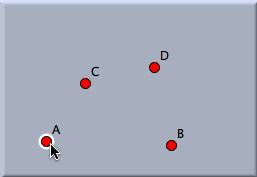
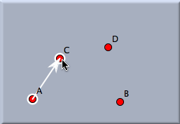
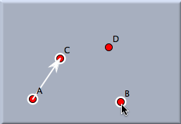
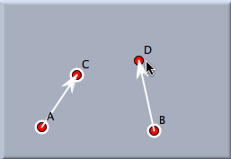
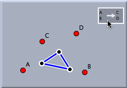
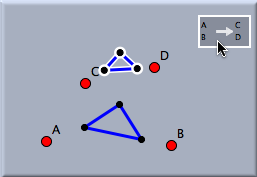
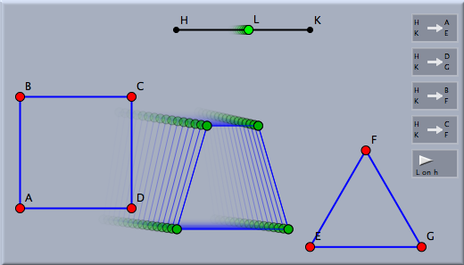

相似変換
相似変換はCinderellaの中でも最も使いやすい変換です。この変換は回転と拡大・縮小を組み合わせた変換と考えられます。的確な相似変換を選ぶことにより、任意の(順序づけられた)一組の点をほかの点へと写すことができます。
相似変換は写す前とあとの像を２組の標本点を指定することによって定義できます。要するに、相似変換は(順序づけられた)４点を選ぶことで定義できます。
 | |
 | |
 | |
 |
最初のクリック:
１つ目の元画像が定義
されます | |
２度目のクリック:
１つ目の写った先が
定義されます | |
３度目のクリック:
２つ目の元画像が定義
されます | |
４度目のクリック:
２つ目の写った先が
定義されます |
繰り返した４度目のクリックの後、相似変換の定義は完了します。この例では、相似変換は点
Aが点
Cに、点
Bが点
Dに写るという一意的な定義がされています。
多くの対象に対し変換を適用すると、すべて同時に写します。つぎの図は相似変換の効果を実際に示しています。
 | |
 |
| 元の図形 | |
写像後の状況 |
相似変換を繰り返すと、写された図形の列が一種の対数螺旋を自動的に形成します。下の画像はその効果を実際に示しています。
相似変換の定義において、１つの点を２度以上使うことができます。つまり、同じ点を元の画像と変換後の画像の点として選択することができるのです。いくつかの特別な相似変換の場合を示してみます。
- A → A and B → B: 恒等変換 : すべての点が不変の変換
- A → A and B → C: 相似変換 : 定点A を持つ相似変換
- A → B and B → C: 鏡映 : A と B を交換する
相似変換とスライダー
相似変換は時々、幾何学的なシナリオをスライダーでコントロールするための道具としてとても便利です。つぎの例がその技術を説明しています。仮に、あなたがある形からほかの形へと滑らかに変換できる図形を作りたい、とします。その変化はスライダーコントローラとして働く線分上の点によりコントロールされます。仮に、あなたが左にある正方形から、右にある三角形へと緑の点が動くにつれて滑らかに"モーフィング"するような図形を作りたいとしましょう。
相対的配置にある１組の元の画像と変換後の画像について、相似変換をいくつも定義することでこのような効果を得ることができます。その組の各点に対して、スライダーの２つの端点をその組の対応する２点にそれぞれ写す相似変換を定義します。それから、スライダーの点(下図の緑の点)をこれらの変換をすべて使ってそれぞれ写します。写された点を線分で結んでおきます。こうしておいて、スライダーを動かすと、モーフィングによって動かされる点が滑らかに最初にあった位置から終わりの位置まで動いていきます。下の絵はその様子が示されています。(スライダーの点をアニメーションモードでスライダー上を動かしています。)
 |
| モーフィングを間単に行うことができました |
注意
相似変換は双曲幾何学や、楕円幾何学では定義されません。
こちらも参照してください
(横山)